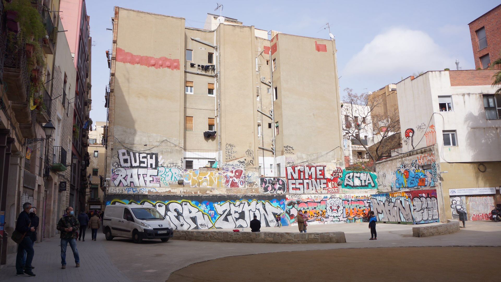
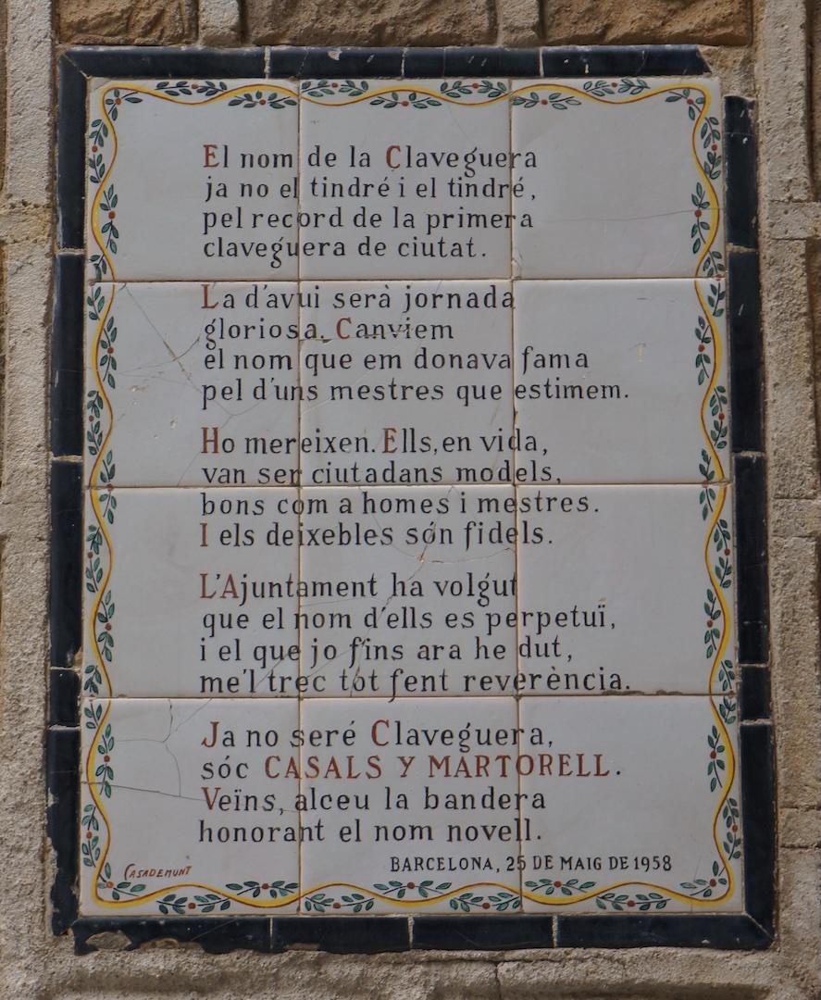
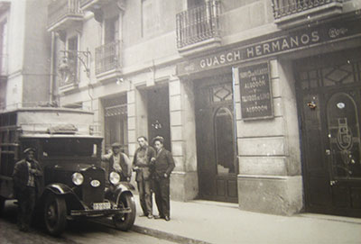
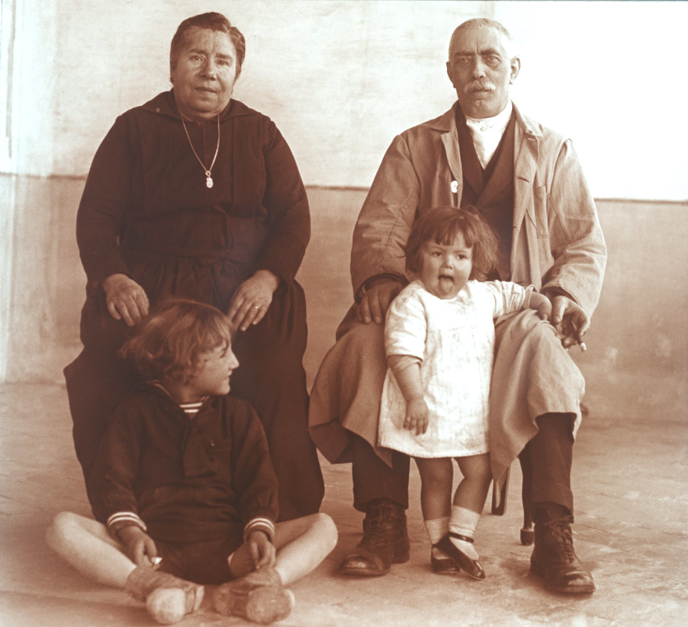

Claveguera, 14 4t (1860-1864)
Audioguia
Prem play per escoltar la història
El carrer
Ens trobem entre els anys 1860 i 1864.
La família Godes Caballeria es trasllada a aquest nou habitatge, a pocs minuts de la seva anterior llar, mantenint-se dins del mateix entorn urbà.
L'antic carrer de la Claveguera rep avui el nom de Mestres Casals i Martorell, reflex de com la ciutat ha anat transformant no només els seus espais, sinó també la seva memòria.

Història familiar
En aquesta etapa, Pascual Godes Gomis consolida la seva vida a Barcelona.
Comença a treballar per a Guasch Hermanos, una empresa tèxtil fundada el 1859, en un moment clau de formació industrial a la ciutat.
El sector tèxtil era aleshores un dels motors econòmics de Barcelona, combinant tradició artesanal amb els inicis de la producció industrial.
De manera significativa, aquesta empresa ha perdurat fins als nostres dies, connectant directament aquella Barcelona del segle XIX amb l'actual.

Durant aquests anys, el matrimoni forma la seva família.
Aquí neix la seva primera filla, Dolors Godes Caballeria.
Dos anys més tard neix Anna, que lamentablement mor abans de complir el seu primer any de vida.
Dolors Godes Caballeria

Biografia
Dolors Godes Caballeria (1860-1935), coneguda a la família com la «tia Dolores» (pronunciat «Doloras»), va ser la filla gran de Pascual Godes Gomis i Rosa Caballeria.
Es va casar amb Francesc Xavier Ferrer Caparà, conegut com l'«oncle Francisquet», natural de Martorell i dedicat al comerç.
A diferència de generacions anteriors, el matrimoni va assolir una bona posició econòmica i va viure en una gran casa al carrer Bertran, 39, en una zona més acomodada de la ciutat.
No obstant això, la seva història també va estar marcada per la tragèdia. Van perdre dos fills: un va morir sent un nadó, i un altre va morir de forma accidental en un succés dramàtic amb la seva cuidadora.
Malgrat aquestes pèrdues, Dolors va mantenir sempre un vincle molt estret amb la resta de la família Godes, exercint un paper central dins del nucli familiar al llarg de la seva vida.
Context Espanya
En aquests anys, Espanya viu una etapa de transició marcada per la consolidació de l'Estat liberal i el desenvolupament desigual de l'economia.
Després del període moderat, el país s'encamina cap a una creixent inestabilitat política. La industrialització avança, però de forma irregular, generant importants desigualtats socials.
Consulta de l'Arxiver
A la Barcelona de mitjan segle XIX, quin percentatge aproximat de nens no superava el primer any de vida?